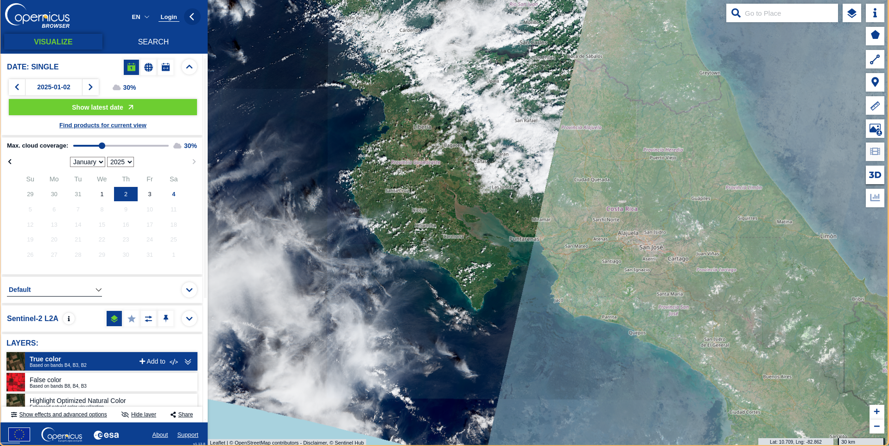
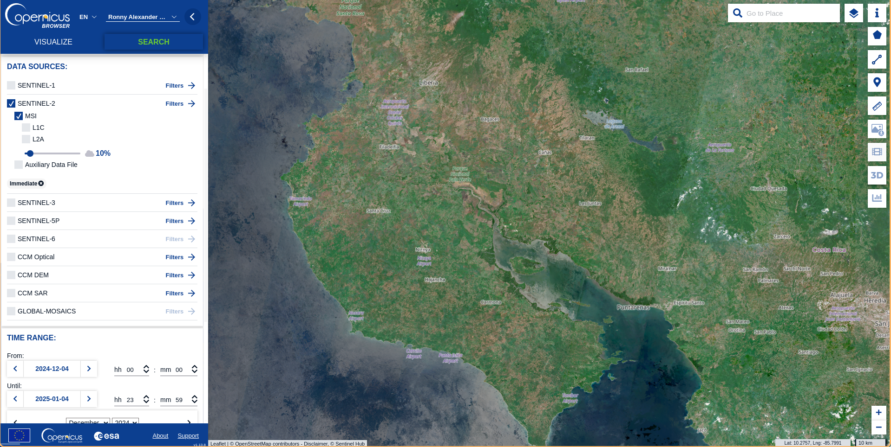
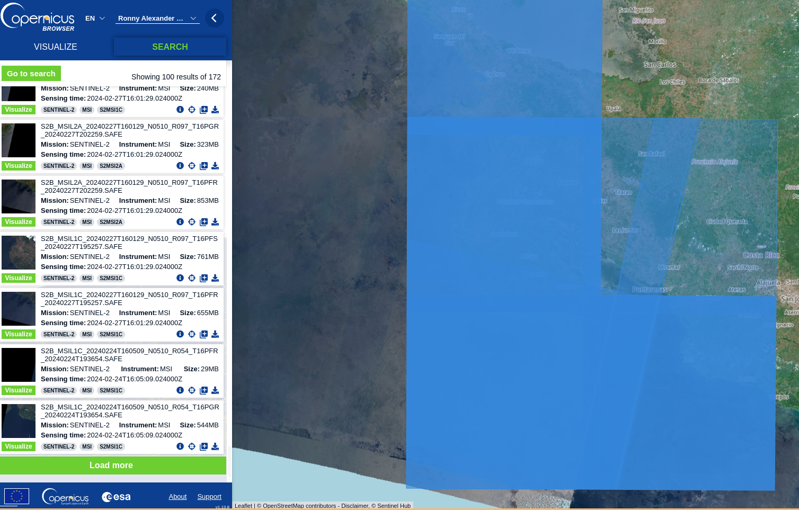
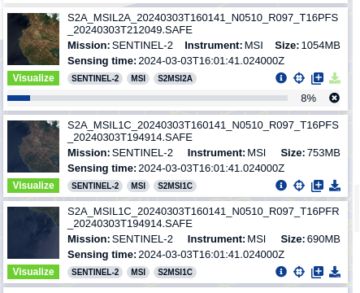
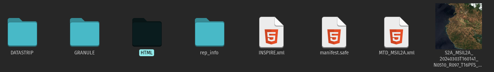
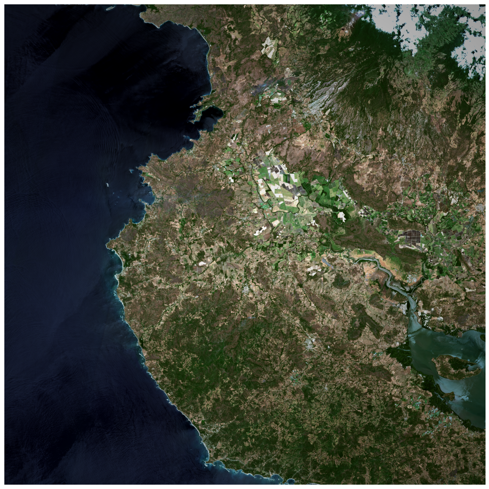
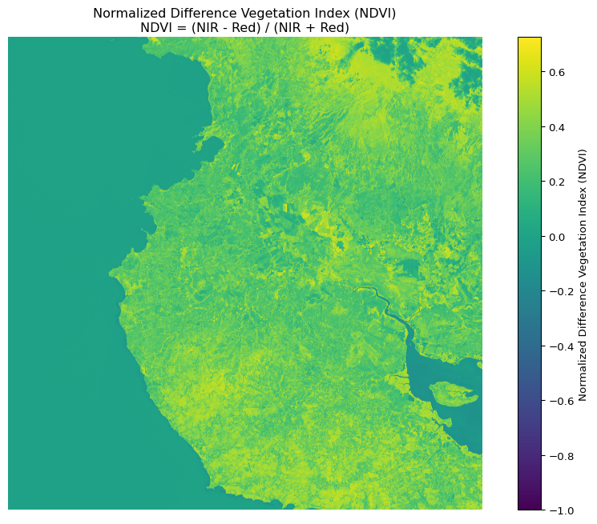
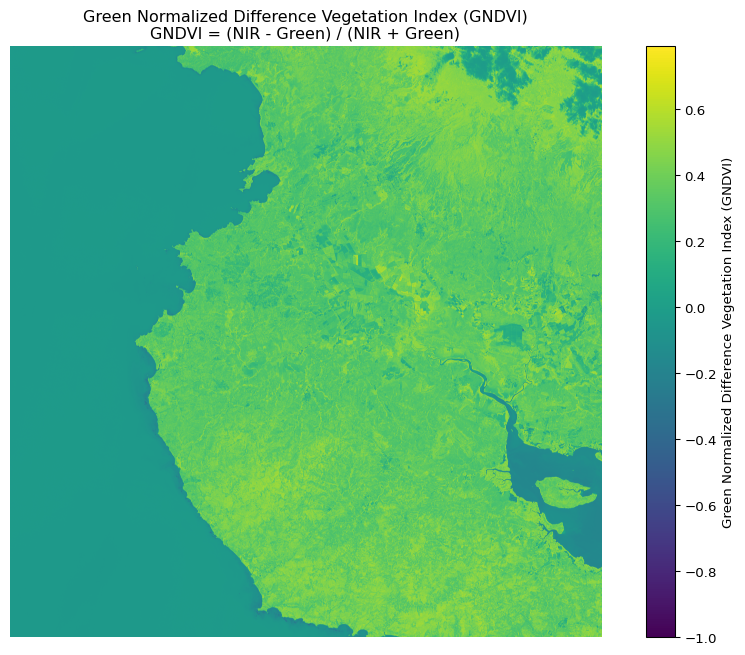
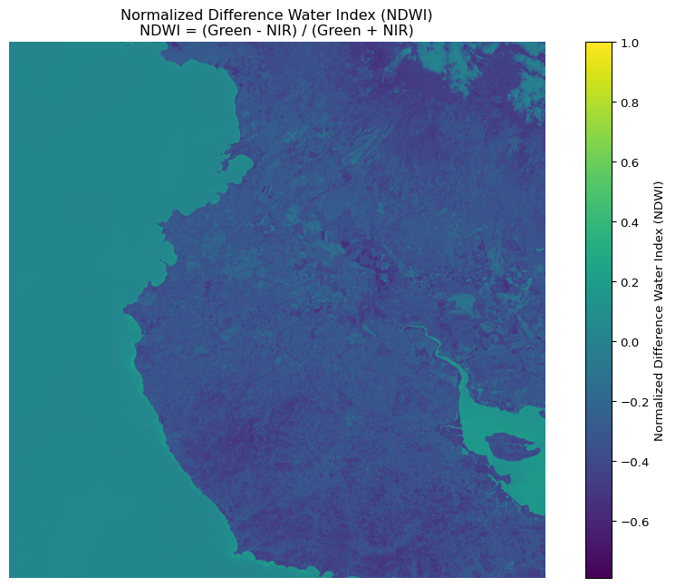
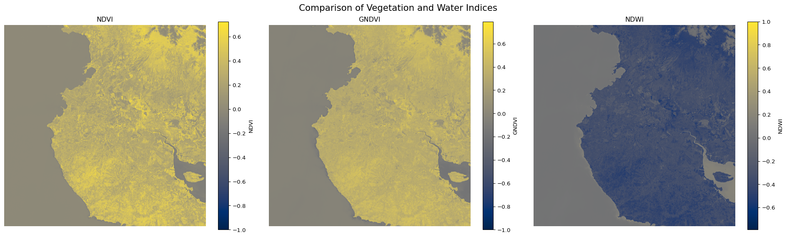

![]()
Getting the data
There are several solutions to obtain the satellite images. In this case, we just want to obtain one image to explore the necessary steps to understand the files, metadata, transform the pixels and visualize the image.
To download any satellite image from the Copernicus Sentinel Missions we can use Copernicus Data Space
When you visit that link, you can see something similar to (as of January 2025):

Select the image by zooming into the area of interest. You can set a group of filter parameters from the parameters tab that will help you to select the image.

To download images, you’ll need an account. However, you can explore without one.
Once the search process is done, you will have a set of options to choose from. For this example we just want to work with one image and not several of them (which can imply merging them in a separate process)
Your search process can look something like:

In my case, I wanted a clear image with atmospheric correction, so I proceeded to download the L2A product.

You can see the names are quite long. There’s a reason for this: the filename provides key information about the product we’re using.
For example, the file name pattern S2A_MSIL2A_20240303T160141_N0510_R097_T16PFS contains:
- S2A: Sentinel-2A satellite (one of two satellites in the constellation)
- MSIL2A/MSIL1C: Processing level
- L2A: Bottom-of-atmosphere reflectance (atmospherically corrected)
- L1C: Top-of-atmosphere reflectance (not atmospherically corrected)
- 20240303T160141: Acquisition date and time (March 3, 2024, 16:01:41 UTC)
- R097: Relative orbit number
- T16PFS: Tile identifier
Why do we have some size differences?
- L2A: 1054MB
- L1C: 753MB and 690MB
The L2A product is larger because it contains additional atmospheric correction data.
What are all those files?
So, now we have the file locally. It is unzipped and in a folder in our repository
The product will contain many files

The images are contained in the GRANULE folder. Inside this one we will find another set of folders which will separate the files by resolution:
- R10m: 10 meter resolution (highest)
- R20m: 20 meter resolution
- R60m: 60 meter resolution (lowest)
Inside each of those folders, you’ll find the actual band files.
Key bands and their common uses:
- B02 (Blue), B03 (Green), B04 (Red): Natural color imagery
- B08: Near Infrared (NIR) - vegetation studies
- B8A: Narrow NIR
- B11, B12: Short-wave Infrared (SWIR) - geology, soil moisture
- TCI: True Color Image (natural color composite)
- AOT: Aerosol Optical Thickness
- WVP: Water Vapor
- SCL: Scene Classification Layer
Reading the product
Now that we understand what the contents are of the product we downloaded, we can proceed to read some files and check them out. As a first step, I just want to process 3 bands (Red, Green, Blue) to obtain a natural composite image. Later I will use other bands to calculate some vegetation indices and explore how they looked on March 3rd, 2024 (Satellite image date)
Given that the path is so long, I’m going to create some objects with the relative path, so later I can use just the object name, and save a lot of typing.
red = 'S2A_MSIL2A_20240303T160141_N0510_R097_T16PFS_20240303T212049.SAFE/GRANULE/L2A_T16PFS_A045425_20240303T161440/IMG_DATA/R10m/T16PFS_20240303T160141_B04_10m.jp2'
green = 'S2A_MSIL2A_20240303T160141_N0510_R097_T16PFS_20240303T212049.SAFE/GRANULE/L2A_T16PFS_A045425_20240303T161440/IMG_DATA/R10m/T16PFS_20240303T160141_B03_10m.jp2'
blue = 'S2A_MSIL2A_20240303T160141_N0510_R097_T16PFS_20240303T212049.SAFE/GRANULE/L2A_T16PFS_A045425_20240303T161440/IMG_DATA/R10m/T16PFS_20240303T160141_B02_10m.jp2'
nir = 'S2A_MSIL2A_20240303T160141_N0510_R097_T16PFS_20240303T212049.SAFE/GRANULE/L2A_T16PFS_A045425_20240303T161440/IMG_DATA/R10m/T16PFS_20240303T160141_B08_10m.jp2'Explore the file with lazy loading
I’m using the open method from rasterio which is going to create a reference to the file without loading its content into memory (lazy loading). That way we will be able to explore the object and validate that we have something reasonable.
Now that we read the necessary bands with a reference to each of the objects, we can access the metadata without loading the whole file into our computer RAM.
What is the type of byte data?
What are the geospatial limits of our image?
Now, let’s plot one of them to validate that everything is fine:
Load the file to memory
Everything looks fine, there is nothing that indicates that there is a problem so let’s load into memory the files. This step could be a little bit problematic if the image is so big that we run out of memory. Be aware!
So far, so good.
Visualizing the image
Now that we have all the data in memory, we can visualize the satellite image. We’ll need some processing to make it look nice
def enhance_image(array, percentile=2):
"""Enhance image contrast using percentile cuts and histogram stretching"""
min_val = np.percentile(array, percentile)
max_val = np.percentile(array, 100 - percentile)
stretched = np.clip(array, min_val, max_val)
stretched = ((stretched - min_val) / (max_val - min_val) * 255).astype(np.uint8)
return stretched
red_enhanced = enhance_image(red)
green_enhanced = enhance_image(green)
blue_enhanced = enhance_image(blue)
# Stack the bands
rgb = np.dstack((red_enhanced, green_enhanced, blue_enhanced))
plt.figure(figsize=(15, 15))
plt.imshow(rgb)
plt.axis('off')
plt.tight_layout()
plt.show()
Here’s another option to improve the image. This is purely for visualization purposes to make the landscape more visually appealing—it doesn’t have any research application at this stage.
def add_vignette(image, strength=0.3):
rows, cols = image.shape[:2]
Y, X = np.ogrid[:rows, :cols]
center_y, center_x = rows/2, cols/2
distances = np.sqrt((X - center_x)**2 + (Y - center_y)**2)
max_dist = np.sqrt(center_y**2 + center_x**2)
normalized_distances = distances/max_dist
vignette = 1 - (normalized_distances * strength)
vignette = np.clip(vignette, 0, 1)
vignette = vignette[:, :, np.newaxis]
return (image * vignette).astype(np.uint8)
final_image = add_vignette(rgb, strength=0.4)
plt.figure(figsize=(15,15))
plt.imshow(final_image)
plt.axis('off')
plt.show()
Finally, let’s not forget to close the band files when done
Vegetation indices
So far we have the RGB bands and the visualization for humans. But, we can do much more and take advantage of the rest of the bands we have within the data product we downloaded. Remember we had several folders with files at different resolutions? Well, there are more than RGB bands in there.
We created the visualization above using the RGB bands at a resolution of 10m, but there is one more band in there: Near Infrared or NIR.
As a reminder, the 10m resolution bands are:
| Band | Name |
|---|---|
| B02 | Blue |
| B03 | Green |
| B04 | Red |
| B08 | NIR |
def calculate_index(band1, band2, name, formula):
"""
Calculate vegetation index and create visualization
band1, band2: input bands
name: name of the index (for title)
formula: description of formula for title
"""
index = (band1 - band2) / (band1 + band2)
plt.figure(figsize=(12, 8))
plt.imshow(index, cmap='viridis')
plt.colorbar(label=name)
plt.title(f'{name}\n{formula}')
plt.axis('off')
plt.show()
return index
# Calculate NDVI (NIR - Red) / (NIR + Red)
ndvi = calculate_index(nir, red,
'Normalized Difference Vegetation Index (NDVI)',
'NDVI = (NIR - Red) / (NIR + Red)')
# For GNDVI (Green NDVI) using green band instead of red
gndvi = calculate_index(nir, green,
'Green Normalized Difference Vegetation Index (GNDVI)',
'GNDVI = (NIR - Green) / (NIR + Green)')
# For NDWI (Normalized Difference Water Index) using green and NIR
ndwi = calculate_index(green, nir,
'Normalized Difference Water Index (NDWI)',
'NDWI = (Green - NIR) / (Green + NIR)')
# Let's also create a subplot comparing all indices
plt.figure(figsize=(20, 6))
plt.subplot(131)
plt.imshow(ndvi, cmap='cividis')
plt.title('NDVI')
plt.colorbar(label='NDVI')
plt.axis('off')
plt.subplot(132)
plt.imshow(gndvi, cmap='cividis')
plt.title('GNDVI')
plt.colorbar(label='GNDVI')
plt.axis('off')
plt.subplot(133)
plt.imshow(ndwi, cmap='cividis')
plt.title('NDWI')
plt.colorbar(label='NDWI')
plt.axis('off')
plt.suptitle('Comparison of Vegetation and Water Indices', fontsize=16)
plt.tight_layout()
plt.show()
# Print some basic statistics for each index
for name, index in [('NDVI', ndvi), ('GNDVI', gndvi), ('NDWI', ndwi)]:
print(f"\n{name} statistics:")
print(f"Min: {index.min():.3f}")
print(f"Max: {index.max():.3f}")
print(f"Mean: {index.mean():.3f}")
print(f"Standard deviation: {index.std():.3f}")



NDVI statistics:
Min: -1.000
Max: 0.725
Mean: 0.199
Standard deviation: 0.192
GNDVI statistics:
Min: -1.000
Max: 0.791
Mean: 0.205
Standard deviation: 0.201
NDWI statistics:
Min: -0.791
Max: 1.000
Mean: -0.205
Standard deviation: 0.201Reuse
Citation
@online{a._hernandez_mora2025,
author = {A. Hernandez Mora, Ronny},
title = {Getting {Started} with {Sentinel-2} {Downloading,}
{Processing,} and {Analyzing} {Satellite} {Imagery} with {Python}},
date = {2025-06-18},
url = {https://blog.ronnyale.com/posts/20250618-sentinel-manual/},
langid = {en}
}